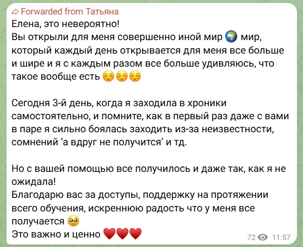
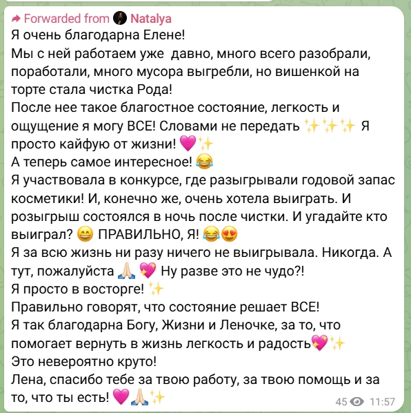
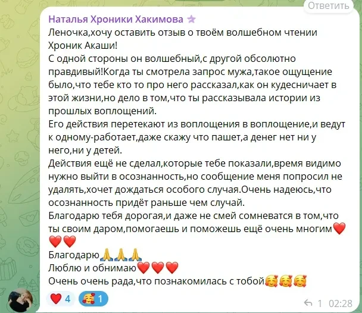

Хроники Акаши — реальные и отрицательные отзывы: честный опыт тех, кто пробовал
Краткий ответ: Большинство людей, кто пробовал чтение Хроник Акаши с опытным проводником, отмечают глубокое облегчение и сдвиги в деньгах, отношениях и самоощущении уже в первые недели после сессии. Ниже собраны реальные истории клиентов, а также честный разбор того, почему на форумах встречаются отрицательные отзывы о Хрониках Акаши и как отличить экологичную работу от шарлатанства.
Лучший способ понять, как работают Хроники Акаши — посмотреть на реальные истории людей, которые прошли через это.
Чего ожидать от первой сессии — реалистичный взгляд
Многие приходят на первую сессию с ожиданием, что сейчас им расскажут всё их будущее или магическим образом решат все проблемы. Но Хроники Акаши работают иначе. Это не волшебная палочка, а глубокая аналитическая работа с вашей душой.
Что могут дать Хроники: понимание первопричины вашей проблемы, осознание кармических узлов, снятие блоков на уровне подсознания и четкий вектор для дальнейших действий.
Чего Хроники не могут: прожить жизнь за вас. Если вам показали причину вашего страха или сценария, вам все равно придется делать шаги в реальном мире, чтобы закрепить результат.
Реальные истории клиентов
Ниже представлены 5 подробных историй трансформаций. Также вы можете посмотреть оригинальные скриншоты переписок и отзывов из Telegram.
Анна, 34 года — Финансовый блок
Анна много работала, но деньги словно "утекали" сквозь пальцы. В сессии мы увидели корень проблемы — глубокий страх больших денег, тянущийся из раскулачивания её прадеда по отцовской линии. Мы проработали этот страх и разъединили программы. Результат: Через 2 месяца после сессии Анна заключила крупный контракт, который позволил ей удвоить доход.
Мария, 28 лет — Отношения
Мария раз за разом привлекала мужчин, которые не хотели брать ответственность, и отношения быстро заканчивались. В Хрониках обнаружился обет одиночества из прошлого воплощения. Результат: Мария осознала свою ценность, изменила паттерн поведения. Спустя полгода она вступила в здоровые, гармоничные отношения.
Ольга, 41 год — Поиск предназначения
Ольга чувствовала полное выгорание на работе бухгалтером. Сессия показала, что ее истинный путь лежит в помощи людям через обучение. Результат: Ольга пошла учиться на педагога-психолога и сейчас успешно консультирует, чувствуя себя на своем месте.
Дмитрий, 36 лет — Страх проявленности
Дмитрий боялся выступать публично и развивать свой бизнес из-за родовых программ. В Хрониках мы нашли ситуацию из рода, где проявление инициативы привело к трагедии. Результат: Осознав, что это не его страх, Дмитрий начал активно вести блог и увеличил поток клиентов.
Екатерина, 45 лет — Психосоматика
Екатерину мучили постоянные боли в шее, врачи не находили причину. Хроники выявили непрожитые эмоции горя в ее женском роду. Результат: После сессии и практик прощения, боль значительно утихла, а эмоциональное состояние стабилизировалось.
Примеры живых скриншотов из Telegram (нажмите для увеличения)
Чтобы вы видели не только пересказ кейсов, но и прямую обратную связь живых людей без редактуры, ниже приведены 3 скриншота из переписок (все 9 скриншотов и отзывы об обучении собраны на странице отзывов о сессиях и чистке Рода с Еленой →):



Откуда берутся отрицательные отзывы о Хрониках Акаши (опыт на форумах: правда или развод?)
Когда люди ищут «хроники акаши отрицательные отзывы» или обсуждения на форумах («кто пробовал»), они хотят застраховать себя от разочарования. Я всегда открыто говорю, что отрицательные отзывы в этой нише возникают по трём конкретным причинам:
- Ожидание «волшебной таблетки» или гадания: если человек приходит, чтобы ему назвали точные даты лотереи или приняли решение за него, он разочаруется — Хроники работают с причинами и возвращают ответственность автору жизни.
- Попадание к незрелому чтецу: если специалист не отделил своё эго от Поля и начал пугать клиента «тяжёлой кармой» или навязывать дорогие чистки (см. как правильно выбрать проводника).
- Праздное любопытство без запроса: когда человек приходит «проверить проводника» в закрытой позиции, информационное поле даёт лишь поверхностный срез.
Когда же есть искренний запрос и готовность действовать в материальном мире, один глубокий разбор заменяет месяцы блуждания в потёмках.
Как отличить честные отзывы от фейковых
При выборе проводника обращайте внимание на отзывы. Настоящие истории изменений обычно имеют несколько признаков:
- В отзыве описана конкретная проблема, а не только слова "всё было супер".
- Есть описание процесса осознания или инсайтов, полученных на сессии.
- Клиент говорит о своих действиях и реальных изменениях после сессии.
- Отсутствуют гарантии 100% мгновенного исцеления от всех болезней.
- Проводник не обещает сделать всё за вас.
Частые вопросы об отзывах и результатах чтения Хроник
Отрицательные отзывы о чтении Хроник Акаши чаще всего возникают по трём причинам: 1) клиент ждал «гадания на точные даты» вместо глубокой работы с причинами; 2) чтение проводил неопытный практик, смешивающий информацию поля со своими оценками и страхами; 3) человек пришёл из праздного любопытства без внутренней готовности менять привычные действия.
Люди, прошедшие полноценную сессию с опытным проводником, отмечают поразительную точность попадания в корень проблемы (часто без предварительного рассказа о деталях жизни), глубокое эмоциональное облегчение в теле и реальные сдвиги в деньгах и отношениях в течение 2–4 недель после сессии.
Внутреннее облегчение и ясность приходят уже во время сессии. Первые событийные изменения в отношениях, состоянии и финансах клиенты обычно замечают в течение 2–4 недель по мере интеграции новых решений в жизнь.
Подлинные необработанные скриншоты сообщений клиентов из Telegram опубликованы в нашей галерее отзывов о чтении Хроник Акаши.
Хотите свою историю изменений?
Начните с бесплатной 15–20-минутной диагностической встречи в Telegram.
Записаться на бесплатную диагностику